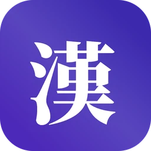
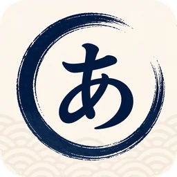
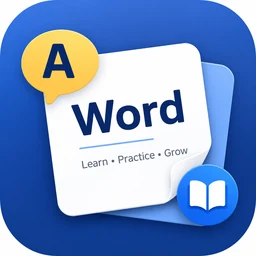
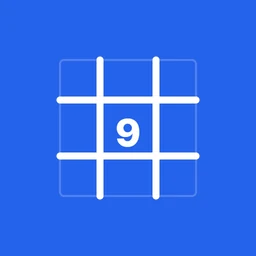
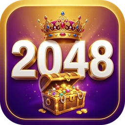

외운 것이
오래 남는 앱을 만듭니다
Apps that help
what you learn stick
覚えたことが
しっかり残るアプリを
RedMoon Lab은 한국의 앱 스튜디오입니다. 한국어·한자·일본어·영어 학습 앱과 하루 몇 분이면 되는 두뇌 퍼즐을 만듭니다. RedMoon Lab is an app studio in Korea, making study apps for Korean, Hanja, Japanese and English, plus brain puzzles you can play in a few minutes. RedMoon Labは韓国のアプリスタジオです。韓国語・漢字・日本語・英語の学習アプリと、数分で遊べる脳トレパズルを作っています。
무엇을 배우고 있나요?What are you learning?何を学んでいますか？
한국어를 배우는 외국인부터 일본어·영어·한자를 공부하는 한국어 사용자까지, 배우는 사람에 맞춰 만들었습니다.Built for each kind of learner — from people learning Korean to Korean speakers studying Japanese, English and Hanja.韓国語を学ぶ海外の方から、日本語・英語・漢字を勉強する韓国語話者まで、学ぶ人に合わせて作りました。
여러 언어를 지원하는 앱Available in several languages多言語対応のアプリ
TOPIK Korean
TOPIK 1~6급 어휘를 간격 반복 카드로 익히고, 문법·회화·기출 단어까지 이어서 공부합니다. 뜻풀이는 15개 언어로 볼 수 있습니다.TOPIK levels 1–6 vocabulary as spaced-repetition cards, followed by grammar, conversations and past-exam words. Meanings in 15 languages.TOPIK 1〜6級の語彙を間隔反復カードで覚え、文法・会話・過去問の単語まで続けて学べます。意味は15言語で表示できます。
삼국한자CJK Characters日中韓漢字
한 글자의 한국 정자·중국 간체·일본 신자체를 나란히 비교하고, 나라별 독음과 뜻을 함께 봅니다.See a character's Korean traditional, Chinese simplified and Japanese shinjitai forms side by side, with readings and meanings for each country.1つの漢字の韓国の正字・中国の簡体字・日本の新字体を並べて比べ、国ごとの読みと意味も確認できます。
한국어 사용자를 위한 앱For Korean speakers韓国語話者向けのアプリ Menus and meanings are in Korean.メニューと意味は韓国語です。

한자마스터Hanja MasterHanja Master
배정한자 5,978자 전부에 훈음과 획순을 담았고, 급수별 모의시험과 퍼즐로 실력을 점검합니다.All 5,978 exam characters with meanings, readings and stroke order, plus mock exams by level and puzzles.出題対象の漢字5,978字すべてに意味・読み・筆順を収め、級別の模擬試験とパズルで実力を確かめます。

매일매일 일본어 단어Daily Japanese Words매일매일 일본어 단어
9,511단어 중 5,310개는 한국 한자음으로 뜻이 통합니다. 아는 건 빠르게 넘기고, 뜻이 다른 함정 단어는 따로 짚어 줍니다.Of its 9,511 words, 5,310 can be understood through Korean Hanja readings. Move quickly through those, and get warned about false friends.9,511語のうち5,310語は韓国の漢字音で意味が通じます。わかる単語はすばやく確認し、意味が違う「わな」単語は別に確認します。

매일매일 영단어Daily English Words매일매일 영단어
모든 단어에 CEFR 등급과 초등부터 수능·토익·토플까지의 단계가 붙어 있어, 앞둔 시험에 맞춰 공부합니다.Every word carries a CEFR level and a stage from Korean elementary school through the CSAT, TOEIC and TOEFL, so you study for the test you actually face.すべての単語にCEFRレベルと、小学校から韓国の大学入試（修能）・TOEIC・TOEFLまでの段階がついています。
하루 몇 분, 머리를 깨우는 게임Brain games for a few minutes a day1日数分の頭の体操

매일매일 스도쿠Daily SudokuDaily Sudoku
4단계 난이도. 퍼즐을 매번 새로 만들고 답이 하나뿐인지 검증합니다.Four difficulty levels. Every puzzle is freshly made and checked for a single solution.4段階の難易度。毎回新しく作り、答えが1つだけか確かめたパズルです。
트윈플립TwinflipTwinflip
카드를 뒤집어 짝을 맞추는 기억력 게임. 180개 스테이지와 2인 대전.A card-matching memory game with 180 stages and two-player versus.カードをめくってペアをそろえる記憶力ゲーム。180ステージと対戦モード。
Potion Lab
같은 색 물약끼리 시험관에 모으는 퍼즐. 모두 풀리는지 검증한 1,000개 레벨.Sort potions by color into flasks — 1,000 levels, each checked to be solvable.同じ色のポーションを試験管に集めるパズル。すべて解けることを確かめた1,000レベル。

2048 Rich Puzzle
동전이 지폐로, 금괴로, 마지막엔 도시로. 자산을 키우는 2048과 스토리 모드.Coins become bills, gold bars and finally a city — 2048 with assets to grow and a story mode.コインが紙幣に、金塊に、最後は都市に。資産を育てる2048とストーリーモード。
Smart Trivia
14개 분야 상식 카드 5,950장을 간격 반복과 퀴즈로 익힙니다.5,950 trivia cards across 14 topics, with spaced repetition and quizzes.14分野の雑学カード5,950枚を、間隔反復とクイズで覚えます。
의견과 오류 제보를 기다립니다Found something wrong? Tell usご意見・不具合のご報告をお待ちしています
페이지에 적힌 단어 수와 문제 수는 앱 데이터에서 직접 센 값입니다. 잘못된 뜻풀이나 오류를 발견하면 메일로 알려 주세요. 모두 읽고, 확인되는 대로 고칩니다.The word and puzzle counts on these pages are counted from the apps' own data. If you find a wrong meaning or a bug, email us — we read every message and fix what checks out.各ページの単語数や問題数は、アプリのデータから直接数えた値です。誤った意味や不具合を見つけたらメールでお知らせください。すべて読み、確認できたものは修正します。
- 문의Contactお問い合わせ
- teamstar13000@gmail.com
- 스토어Storesストア
- Google Play · App Store
- 개인정보Privacyプライバシー
- 개인정보처리방침Privacy policyプライバシーポリシー
- GitHub
- github.com/heyday07